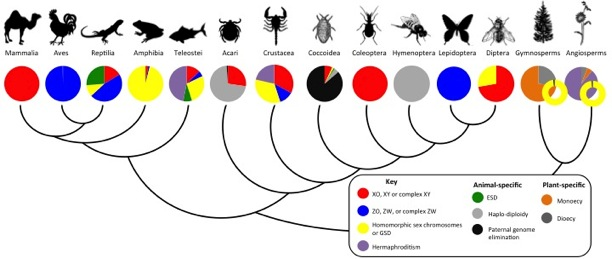

Sex is universal among living organisms, yet a mind-boggling diversity of mechanisms that determine the sex of an individual exists. These include chromosomal sex determination (such as in humans, where males have an X and a Y chromosome, and females have two X chromosomes), environmental sex determination (such as in many reptiles, where environmental cues - such as temperature - determine sex), or haplo-diploid sex determination (where fertilized eggs develop as females, and unfertilized eggs develop as males - such as in bees), amongst others. While some taxonomic groups (such as mammals and birds) have stable sex determination mechanisms, in other taxa (such as insects and fish), sex determination mechanisms can vary greatly among closely related species, or even among individuals within a species.

This variation is surprising, given that sex determination is a fundamental biological process. The evolutionary forces that drive this variation of sex determination systems are not understood. The "
Tree of Sex Consortium" has assembled a
database which is listing sexual systems and sex determination mechanisms across the eukaryotic tree of life. By synthesizing existing data on sexual systems, the database allows biologists to identify the evolutionary and ecological processes that underlie the remarkable diversity in sexual systems across the tree of eukaryotic life.